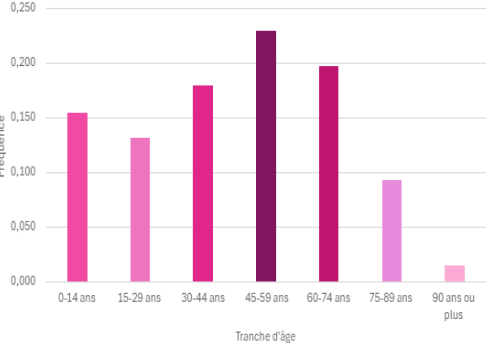
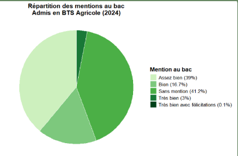

Mes Projets

Site Web Portfolio
Développement d'un portfolio personnel avec HTML, CSS et JS.

Indicateurs de performance
Créer un tableau de bord de graphiques et d'indicateurs pour "Fleury Michon".

Reporting Décisionnel Power BI
Traitement de données brutes et création de 20 indicateurs de pilotage stratégiques.

Reporting d'analyse multivariée
Outil visuel pour le suivi de la pauvreté en France (INSEE), incluant des analyses ACP et du Clustering.

Application interactive Excel VBA
Création d'une application de saisie de notes, suivi des moyennes de SD et analyse comparative des semestres.

Analyse géographique des Mcdo en France
Cartographie thématique et analyse décisionnelle des points de vente McDonald’s : vers une compréhension spatiale du maillage territorial français.

Intégration et traitement de flux de données
Conception d'un programme de migration et transformation de flux de données pour répondre à des fins décisionnelles.

Tableau de bord - Concours Dataviz
Étude de l'impact macro-géographique du lieu de vie sur le parcours d'insertion éducatif et professionnel des 15-29 ans.

Modélisation & Prévision des Séries Temporelles
Analyse statistique rigoureuse et prédiction mathématique du cours mondial moyen mensuel du cuivre sur 15 ans.

Prédiction d'une variable quantitative
Modélisation et comparaison d'algorithmes de Machine Learning pour la prédiction de performance statistique.

Analyse des déterminants sociopolitiques
Étude des corrélations entre le profil socio-économique d'une population régionale et ses comportements électoraux.

Profils et Insertion en BTS Agricole
Exploration statistique et dataviz des trajectoires étudiantes spécifiques aux filières agricoles en France.